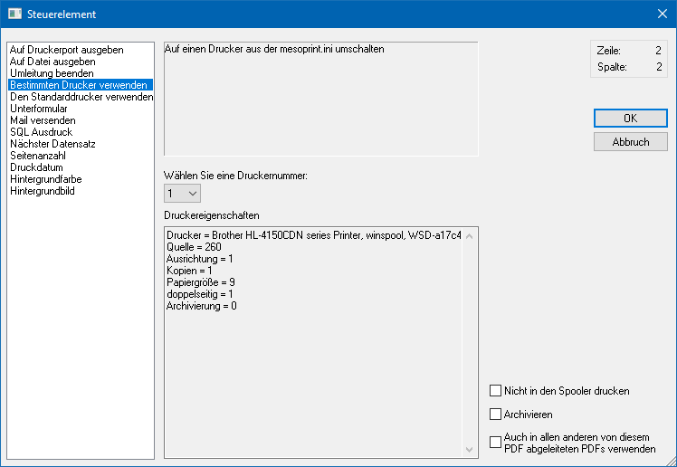
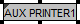

In der WinLine gibt es die Möglichkeit, 50 verschiedene Drucker zu verwalten, wobei diese nicht zwingend physikalische Drucker sein müssen. Mit Hilfe des Steuerelements "Bestimmten Drucker verwenden" kann für die Ausgabe einer diese Drucker angesteuert werden.

Ø Wählen Sie eine Druckernummer
An dieser Stelle steht eine Auswahlbox zur Verfügung, aus der ein Drucker ausgewählt werden kann. Wurde ein Drucker ausgewählt, dann werden im Fenster "Druckereigenschaften" die Druckeinstellungen angezeigt.
Ø Nicht in den Spooler drucken
Mit dieser Option wird gesteuert, dass das Formular immer ausgedruckt wird, auch wenn im Programm der Spooler aktiviert ist.
Ø Archivieren
Mit dieser Option wird gesteuert, dass dieser Ausdruck immer archiviert wird, auch wenn der Archiv-Button oder die Archiv-Option in der Druckersteuerung nicht aktiv ist.
Ø Auch in allen anderen von diesem PDF abgeleiteten PDFs verwenden
Durch Aktivierung dieser Option wird das Steuerelement automatisch an alle Formulare weitergereicht, welche dasselbe PDI aufweisen und in denen kein "AUX PRINTER" oder "AUX STANDARD" vorkommt.
Hinweise
Folgende Punkte sind bei der Nutzung der Option zu beachten:
ü Die Option kann nur im jeweiligen Basisformular (Formularname = PDI) aktiviert werden.
ü Die AUX-Einträge müssen immer an erster Stelle im jeweiligen Formular stehen.
ü Wurden die Einträge "Nicht in den Spooler drucken" und / oder "Archivieren" aktiviert, so werden diese Einstellungen immer weitergereicht und können nicht im empfangenden Formular deaktiviert werden.
Darstellung im Formular
Im Formular werden Steuerelemente des Typs "Bestimmten Drucker verwenden" wie folgt (die Zahl ist abhängig von der definierten Druckernummer) dargestellt:
ü

Zusätzlich wird in der Buttonleiste "Elementeigenschaften" der Inhalt (die Zahl ist abhängig von der definierten Druckernummer) wie folgt dargestellt:
ü